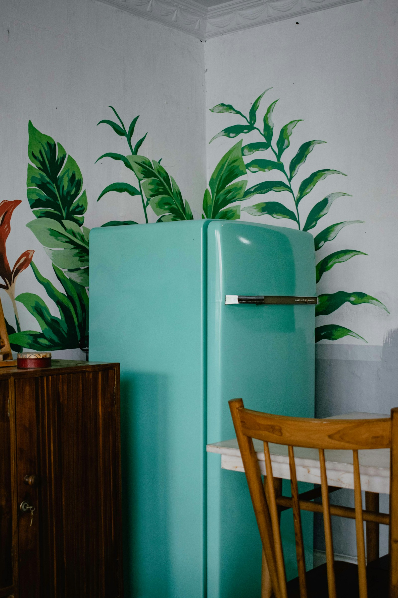
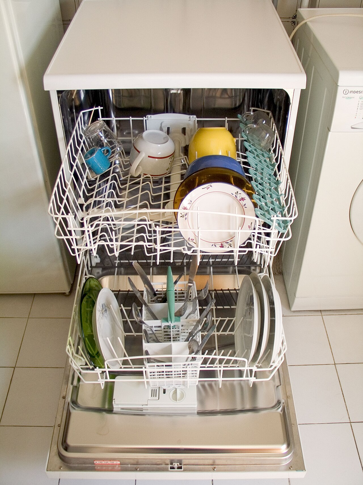
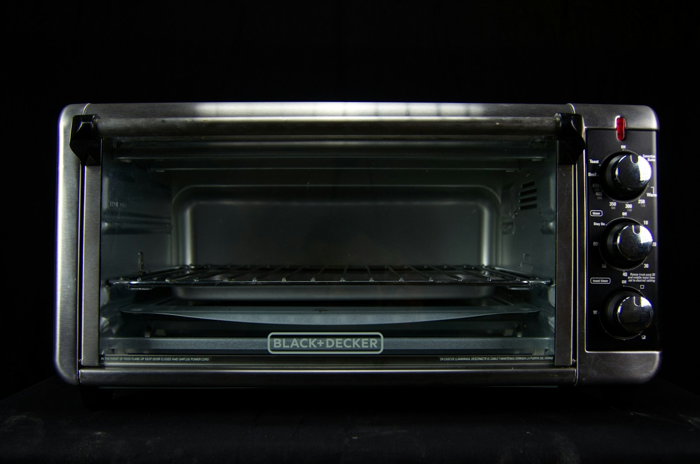
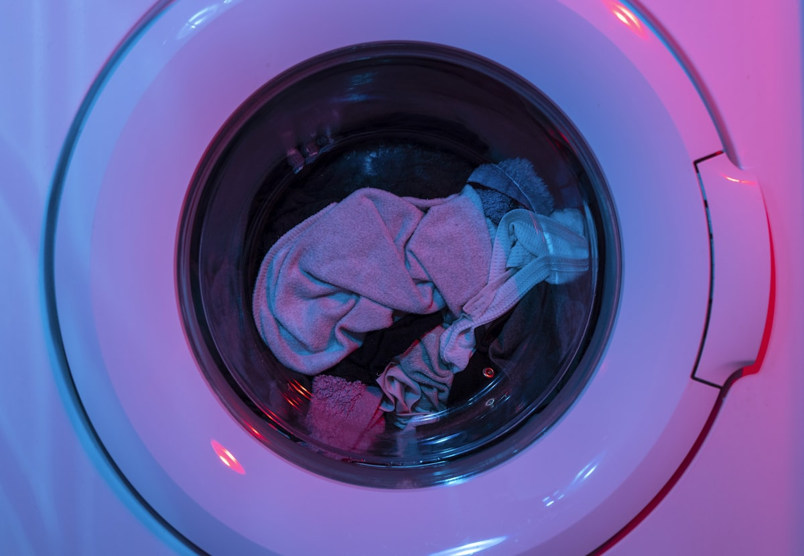

Cooling & Refrigeration
Refrigerator Repair
Cooling failures, frost accumulation, compressor relays, ice makers, and door seal replacements.
Explore service
Book a qualified local specialist, approve a clear estimate, and follow the visit from request to final invoice.

In-home electrical and mechanical testing isolates the root cause before you authorize any work.
Select morning, afternoon, or same-day priority arrival windows that match your daily schedule.
Follow technician assignment, live arrival estimates, and archived invoices in your portal.

Cooling failures, frost accumulation, compressor relays, ice makers, and door seal replacements.
Explore service
Drainage blocks, spin cycle faults, water inlet valves, suspension dampers, and motor drives.
Explore serviceHeating element burnouts, thermal fuses, drum rollers, drive belts, and airflow vent testing.
Explore service
Standing basin water, circulation wash pumps, inlet solenoid leaks, and electronic door latches.
Explore serviceBake heating elements, gas igniters, temperature calibration, and digital touch control panels.
Explore service
Power delivery issues, turntable drive motors, high-voltage diodes, and interlock door switches.
Explore serviceQuality repair combines rigorous electrical testing with genuine respect for your floors, cabinetry, and living space.
Voltages, sensors, and mechanical tolerances are verified before proposing repairs.
Model-matched original components ensure longevity and preserve manufacturer standards.
Protective floor coverings and careful tooling protect your kitchen and laundry space.
We believe appliance repair should be predictable, clean, and backed by accountable local specialists.

We assign certified technicians with documented experience on your specific appliance brand.
You review and approve diagnostic findings, labor scope, and part costs prior to repair start.
Direct manufacturer components backed by a 90-day warranty instead of generic aftermarket parts.
Full operational and cycle testing is completed and documented before we conclude the visit.
Four transparent stages keep your household informed and in full control of every decision.
Select your appliance, tell us what you observe, and pick your preferred arrival window.
Receive your specialist's profile, route confirmation, and real-time arrival estimates.

Review on-site diagnostic findings, approve the itemized estimate, and complete the repair.
Verify completed functional tests and access your invoice and 90-day warranty in the portal.
Appointment progress, technician assignment, itemized estimates, and service history stay connected in one place instead of scattered across texts.
Everything you need to know about our diagnostic procedures, estimate policies, and warranty protection.
Our customer support team is available Monday through Saturday to assist with scheduling and coverage inquiries.
Contact Customer CareUnderstanding airflow restrictions, frost buildup patterns, start relays, and coil cleanliness.
Read guide
Key checkpoints for drain pump filters, pressure switches, and discharge hose obstructions.
Read guide
The 50% rule, equipment age thresholds, part availability, and total cost calculation.
Read guideBook an arrival window online in under two minutes or contact our local support team directly.